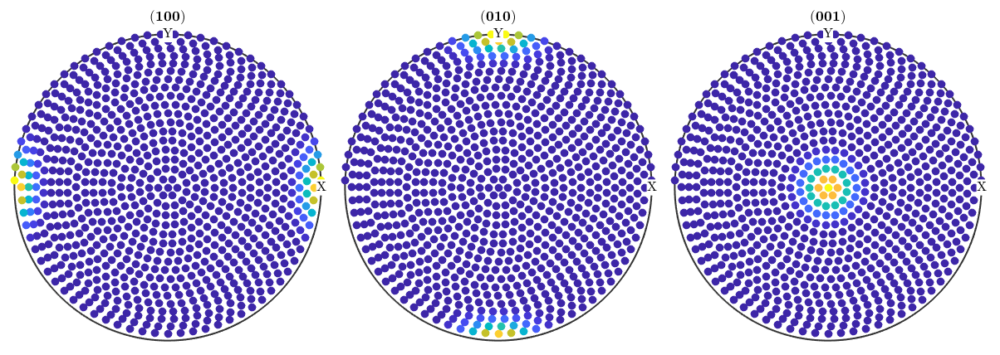
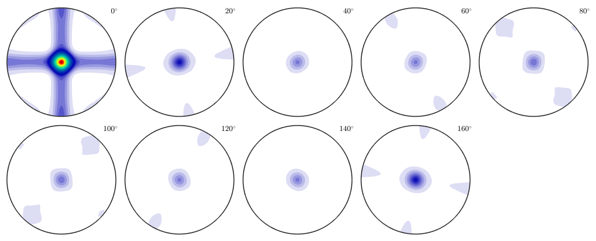
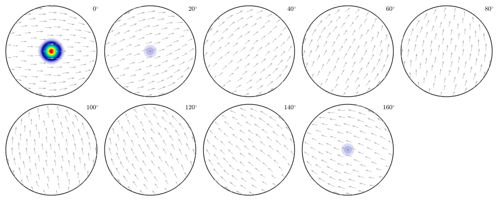
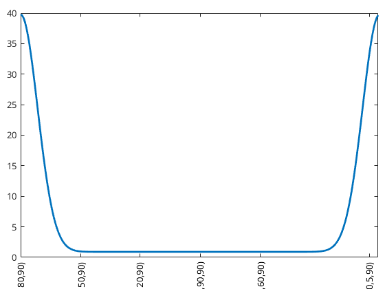
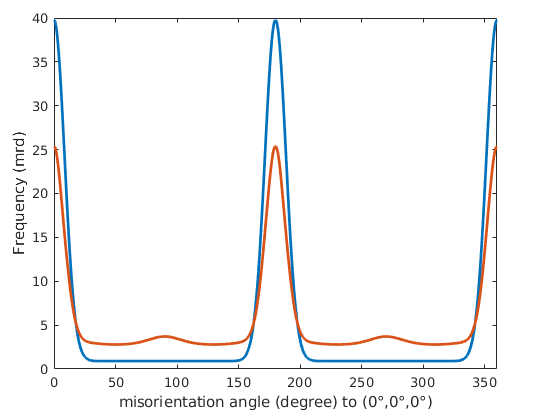
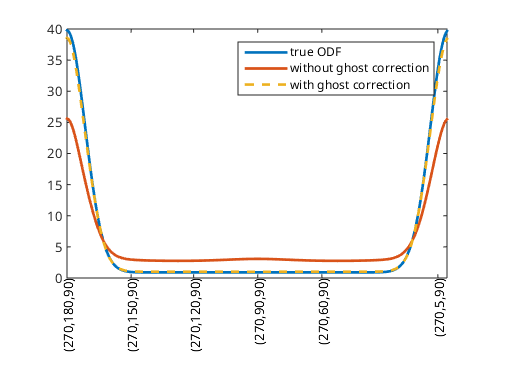
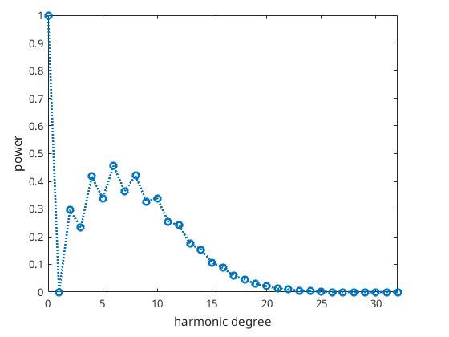
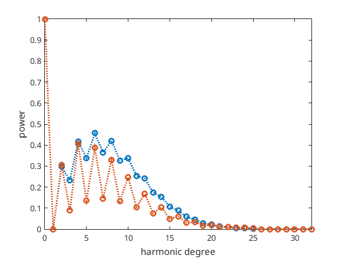
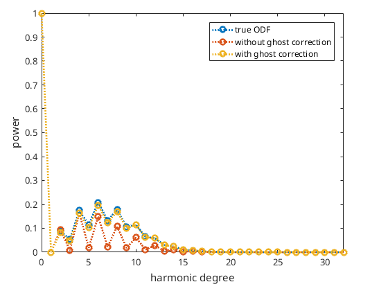

Explains the ghost effect to ODF reconstruction and the MTEX option ghostcorrection.
A general problem in estimating an ODF from pole figure data is the fact that the odd order Fourier coefficients of the ODF are not present anymore in the pole figure data and therefore it is difficult to estimate them. Artifacts in the estimated ODF that are due to underestimated odd order Fourier coefficients are called ghost effects. It is known that for sharp textures the ghost effect is relatively small due to the strict non-negativity condition. For weak textures, however, the ghost effect might be remarkable. For those cases, MTEX provides the option ghost_correction which tries to determine the uniform portion of the unknown ODF and to transform the unknown weak ODF into a sharp ODF by substracting this uniform portion. This is almost the approach Matthies proposed in his book (He called the uniform portion phon). In this section, we are going to demonstrate the power of ghost correction at a simple, synthetic example.
A unimodal ODF with a high uniform portion.
cs = crystalSymmetry('222'); mod1 = orientation('Euler',0,0,0,cs); odf = 0.9*uniformODF(cs) + ... 0.1*unimodalODF(mod1,'halfwidth',10*degree)
odf = ODF
crystal symmetry : 222
specimen symmetry: 1
Uniform portion:
weight: 0.9
Radially symmetric portion:
kernel: de la Vallee Poussin, halfwidth 10°
center: (2.5e-14°,0°,0°)
weight: 0.1
% specimen directions r = equispacedS2Grid('resolution',5*degree,'antipodal'); % crystal directions h = [Miller(1,0,0,cs),Miller(0,1,0,cs),Miller(0,0,1,cs)]; % compute pole figures pf = calcPoleFigure(odf,h,r); plot(pf)
without ghost correction:
rec = calcODF(pf,'noGhostCorrection','silent');
with ghost correction:
rec_cor = calcODF(pf,'silent');
without ghost correction:
calcError(pf,rec,'RP')progress: 100%
ans =
0.0081 0.0440 0.0599
with ghost correction:
calcError(pf,rec_cor,'RP')progress: 100%
ans =
0.0129 0.0248 0.0261
without ghost correction:
calcError(rec,odf)
Warning: NARGCHK will be removed in a future
release. Use NARGINCHK or NARGOUTCHK instead.
progress: 100%
ans =
0.1024
with ghost correction:
calcError(rec_cor,odf)
Warning: NARGCHK will be removed in a future
release. Use NARGINCHK or NARGOUTCHK instead.
progress: 100%
ans =
0.0050
without ghost correction:
plot(rec,'sections',9,'silent','sigma')
progress: 100%
with ghost correction:
plot(rec_cor,'sections',9,'silent','sigma')
progress: 100%
radial plot of the true ODF
close all f = fibre(Miller(0,1,0,cs),yvector); plot(odf,f,'linewidth',2); hold all
radial plot without ghost correction:
plot(rec,f,'linewidth',2); radial plot with ghost correction:
plot(rec_cor,f,'linestyle','--','linewidth',2); hold off legend({'true ODF','without ghost correction','with ghost correction'})
Next, we want to analyze the fit of the Fourier coefficients of the reconstructed ODFs. To this end, we first compute Fourier representations for each ODF
odf = FourierODF(odf,25) rec = FourierODF(rec,25) rec_cor = FourierODF(rec_cor,25)
odf = ODF
crystal symmetry : 222
specimen symmetry: 1
Harmonic portion:
degree: 25
weight: 1
rec = ODF
crystal symmetry : 222
specimen symmetry: 1
Harmonic portion:
degree: 25
weight: 1
rec_cor = ODF
crystal symmetry : 222
specimen symmetry: 1
Harmonic portion:
degree: 25
weight: 1
without ghost correction:
calcError(rec,odf,'L2')Warning: NARGCHK will be removed in a future
release. Use NARGINCHK or NARGOUTCHK instead.
ans =
0.3391
with ghost correction:
calcError(rec_cor,odf,'L2')Warning: NARGCHK will be removed in a future
release. Use NARGINCHK or NARGOUTCHK instead.
ans =
0.0275
Plotting the Fourier coefficients of the recalculated ODFs shows that the Fourier coefficients without ghost correction oscillates much more than the Fourier coefficients with ghost correction
true ODF
close all; plotFourier(odf,'linewidth',2)
keep plotting windows and add next plots
hold allWithout ghost correction:
plotFourier(rec,'linewidth',2) with ghost correction
plotFourier(rec_cor,'linewidth',2) legend({'true ODF','without ghost correction','with ghost correction'}) % next plot command overwrites plot window hold off
| DocHelp 0.1 beta |